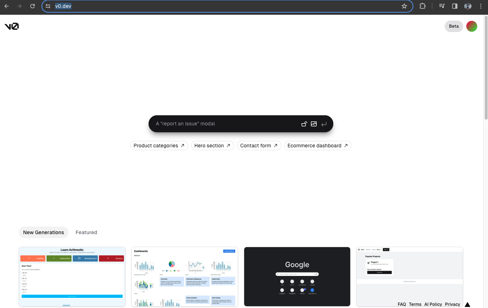
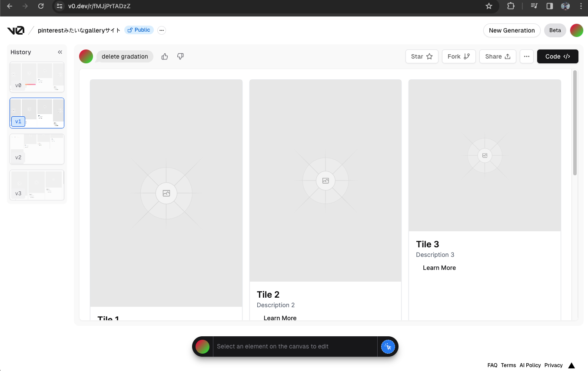
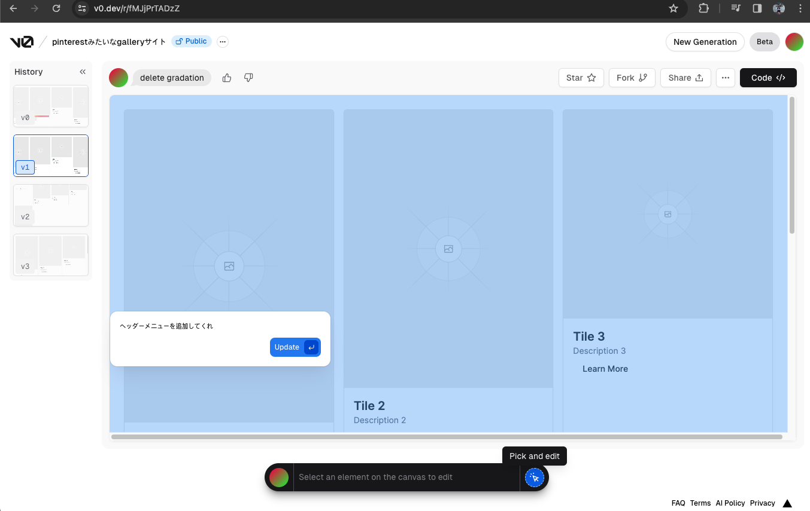
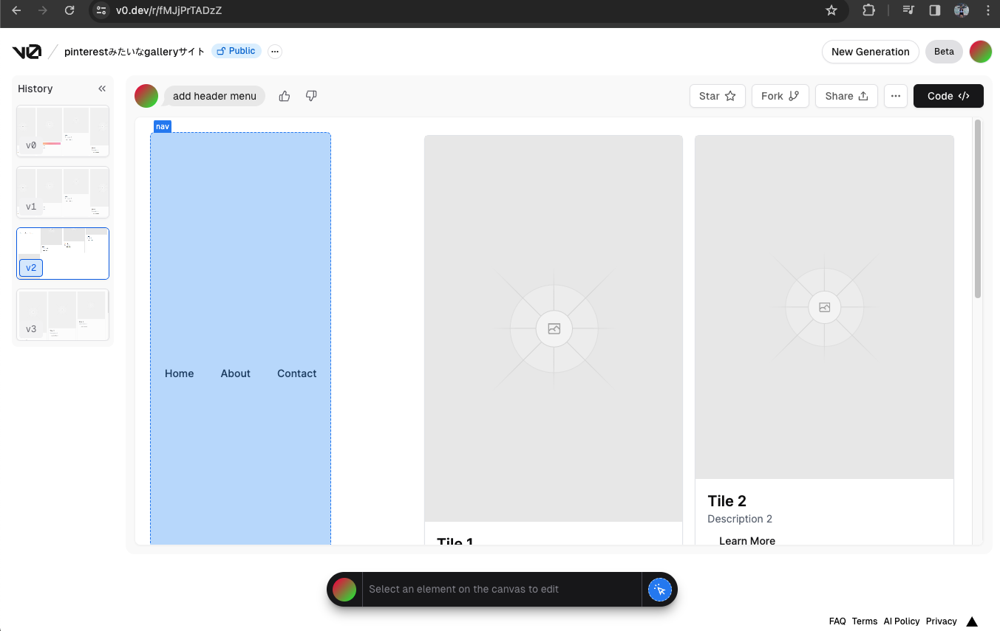
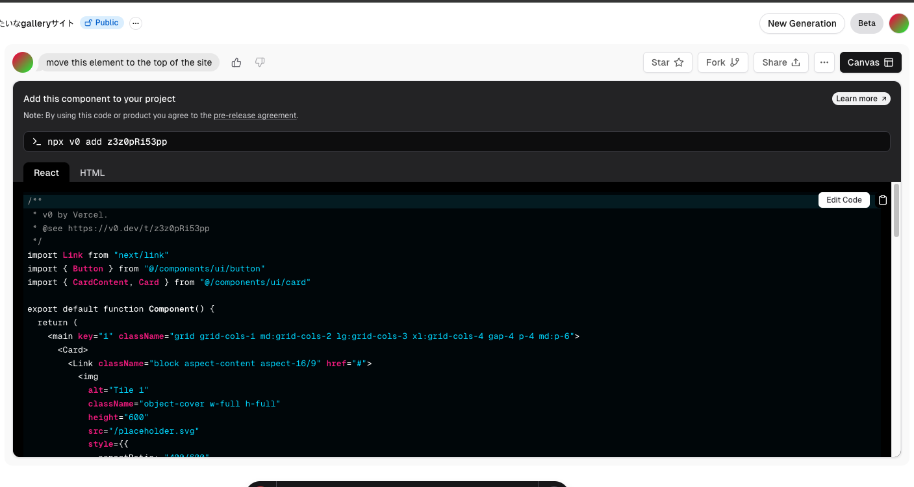
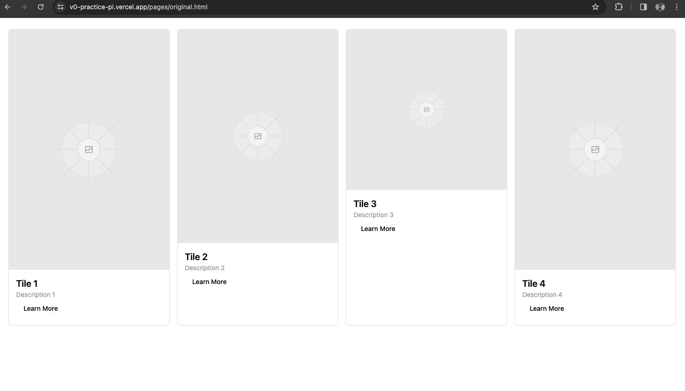
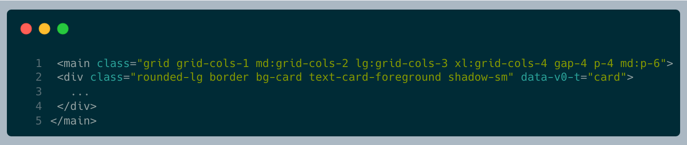
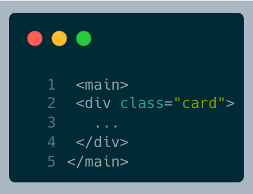
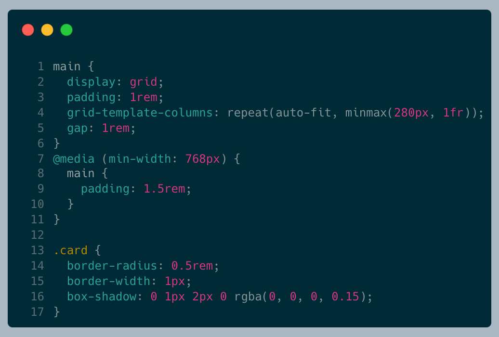
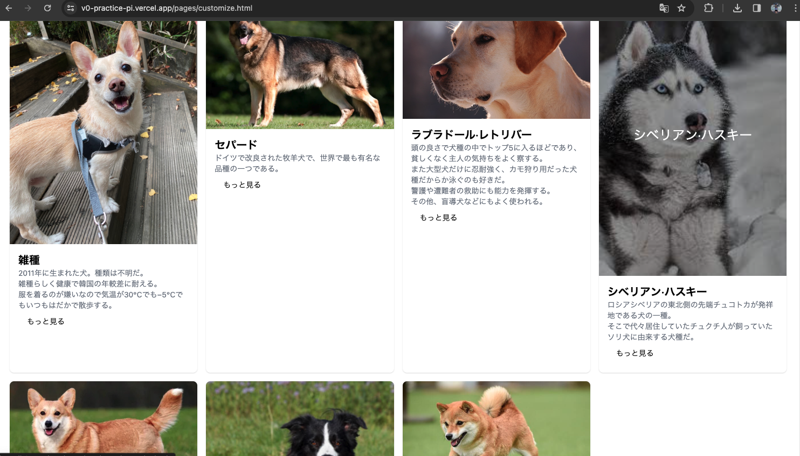

V0とは？

https://v0.dev/
- Next.jsの開発会社である「Vercel」で運営しているウェブデザインAIサービス
- 現在のバージョンはBeta(2023.12)
実際に使ってみよう！
pinterestのようなWebサイト
1. プロンプトに作りたいWebサイトを入力

2. 気に入らない部分があったら、部分修正も可能（ただし、クレジット必要 課金^_^）

3. 修正してもらったが、何かおかしい。

ソースコードを確認

https://v0.dev/r/fMJjPrTADzZ
- ReactとHtmlのコードの確認ができる。
- CSSはtailwindを利用。
実際結果

URL： https://v0-practice-pi.vercel.app/pages/original.html
コード修正
URL： https://v0-practice-pi.vercel.app/pages/modify.html
修正する前のコード

修正したコード


- 修正はTailwind To CSSというコンパイラーを利用。
カスタマイズ

https://v0-practice-pi.vercel.app/pages/customize.html
- 修正コードを元に「犬ギャラリーサイトを実装」
- 一番時間がかかった部分：テキスト入力＆素材探し
- Total：コード修正（10分）＋素材とテキスト情報探し（20分）＝30分
メリット＆デメリット
メリット
- 誰でもプロンプト入力でWebサイトのデザインとコードをもらえる。
- 無料プランもあるので、一応、課金しなくてもいい。価格詳細
デメリット
- tailwindCSSに従属
- コードがあまり効率的ではないかも。
- まだBetaのせいかも知れないが、希望するデザイン通り、結果物が出ない場合が山ほどある。
どんな時に使ったらいいか。
- サイトプロジェクト
実習しよう
アンケートの結果：